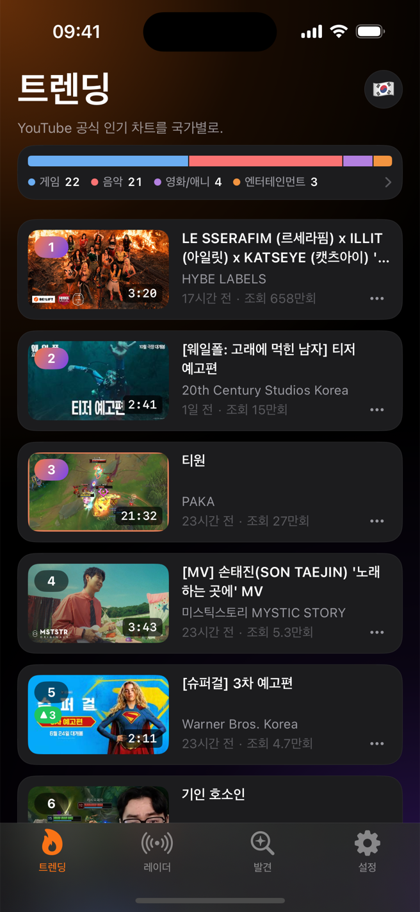
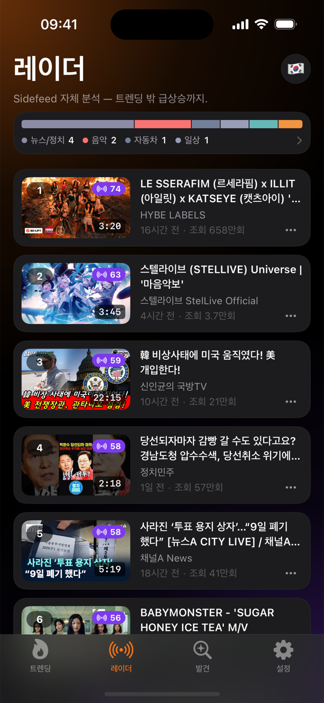
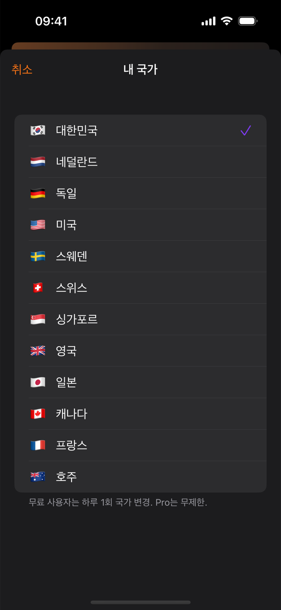
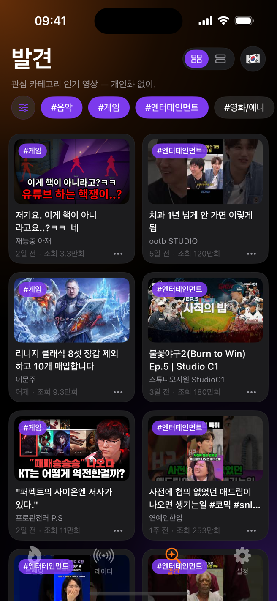

Sidefeed는 YouTube 크리에이터·콘텐츠 기획자를 위한 트렌드 리서치 도구입니다. 12개국 공식 트렌딩, 14개 카테고리, 6시간 순위 변동 — 개인화 없는 피드에서 지금 올라오는 흐름을 그대로 읽으세요.

국기 버튼 한 번으로 12개국 전환. 아침엔 한국, 점심엔 미국 — 각 시장의 YouTube 공식 트렌딩 차트를 그대로 봅니다.
모든 영상에 6시간 순위 변화가 붙습니다. ▲ 상승, ▼ 하락, NEW 진입. Top Movers가 가장 빠른 상승작을, 레이더가 트렌딩 밖 급상승을 잡아냅니다.
인사이트 시트로 순위 이력·카테고리·조회 속도를 확인하고, 참고할 영상은 나중에 보기로 저장 — iCloud로 기기 간 동기화.
차트는 '지금 큰 것'을 보여줄 뿐입니다. 무엇이 커질지는 움직임이 말해주죠. Sidefeed는 하루 내내 차트를 스냅샷해 모든 영상에 6시간 변화량을 붙입니다.
공식 차트, 자체 랭킹, 카테고리 발견, 시장 전환 — 전부 공개 데이터 기반이라 누가 봐도 같은 화면입니다.
YouTube 공식 인기 차트에 6시간 순위 뱃지, Top Movers, 카테고리 분포 바를 얹었습니다.
Sidefeed 자체 랭킹. 트렌딩 차트 밖에서 올라오는 급상승작까지 포착합니다.
14개 카테고리별 인기 영상. 공개 인기 데이터 그대로, 개인화 없음.
국기 탭 한 번으로 시장 비교. 지금 도쿄의 1위는 무엇일까요?



구글 계정도 시청기록도 필요 없습니다. 알고리즘이 고른 피드가 아니라, 모두에게 같은 공개 트렌드를 봅니다.
하루 내내 차트를 스냅샷해 순위 이력을 계산합니다. YouTube에서는 볼 수 없는 움직임입니다.
영상을 탭하면 현재 순위·6시간 변화·카테고리·조회 속도를 먼저 확인. YouTube 이동은 그다음.
롱폼만 리서치하고 싶을 때, 토글 하나로 모든 피드에서 쇼츠 제외.
참고 영상을 저장하면 내 iCloud로 기기 간 동기화됩니다.
채널 차단·관심없음으로 리서치에 잡음이 끼지 않게.